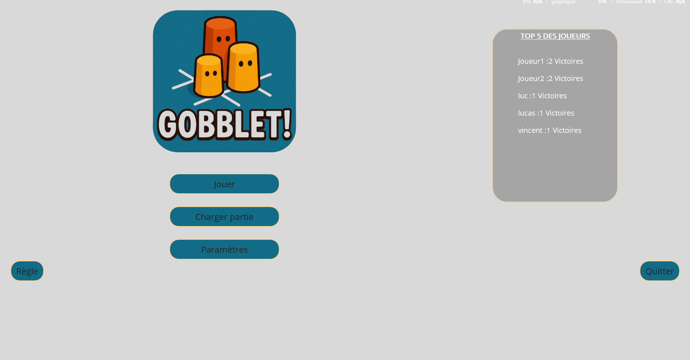
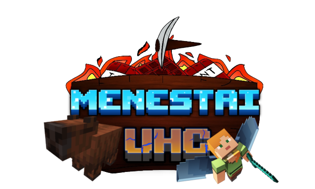
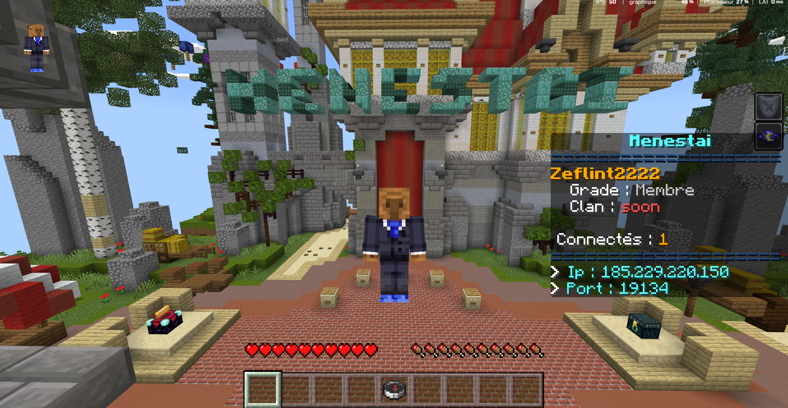

J’ai eu l’occasion cette année de réaliser en équipe de 3 en .net MAUI une application qui reproduisait le jeu de société GOBBLET. Je me suis occupé de coder différentes classes en C et de designer ainsi que de coder différentes vues de l’application. J’ai également été chargé de coder des évènements ainsi que de faire le binding entre le plateau de jeu et le code, et j’ai ensuite épauler mes équipiers lorsqu’ils avaient besoin de moi. J’ai apporté à mon équipe une base solide sur laquelle s’appuyer pour réaliser ensuite l’application. Ce projet m’a permis de développer mon esprit d’équipe tout en affinant mes compétences techniques dans le développement d'application et dans l'optimisation de code en .net MAUI.


Depuis la classe de Première, je développe en autonomie un add-on Minecraft en JavaScript destiné à une communauté. L’objectif est de proposer une plateforme de mini-jeux disponibles à tout moment, directement intégrés au jeu. Ce projet m’a permis de découvrir le monde du développement dès le lycée. Aujourd’hui encore, je le maintiens activement en y ajoutant des fonctionnalités selon les retours des joueurs. Ce projet m’a permis de développer mon autonomie ainsi que ma capacité à répondre à des besoins réels.